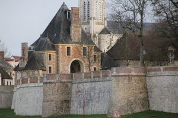
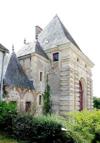
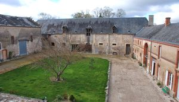
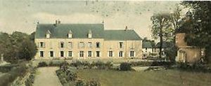
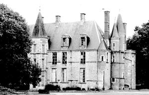
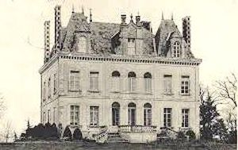
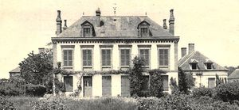

Recensement Jean-Claude Truffet
| Département | 45 — Loiret |
| Canton | Ouzouer-sur-Loire |
| Commune | Dampierre-en-Burly |
| Type d'édifice | Forteresse |
| Période d'origine | XVII-XIX |







Trois châteaux dans cet article; Dampierre, Marchais-Creux, Noues st-Ythier et Verdier, pas d'info pour Noues. DAMPIERRE , Au XVIIIe siècle, la seigneurie passa à Feydeau de Marville, puis fut détruite à la Révolution. En 1826 M.de Behague, agronome, s'y installa et créa un domaine de 2.000 hectares. Il y mourut en 1884 à 80 ans. Il ne reste du château que le pavillon de l'horloge du XVIIe siècle qui sert d'entrée. Il appartient à M. de Ganay. Dans ce même pays, il faut aussi signaler le manoir de Marchais-Creux. Ses jardins, dit-on, avaient été dessinés par Le Nôtre. Un colombier du XVIe siècle témoigne de l'ancienneté du domaine. Mais la demeure elle-même date du XVIe siècle. Elle fut habitée pendant des siècles par les Rancourt, puis les Adhémar. Le corps présente une façade principale en pierre et une façade postérieure en pierre et briques sans décoration. Au rez-de-chaussée, passage voûté en briques, en berceau avec arcs en pierre et pénétrations latérales en lunettes. L'ensemble n'a pas été remanié. Inscription au M.H. par arrêté du 6 mars 1928. VERDIER, a été construit par Maxime du Verdier de la Sorinière. Appartenant à une noble famille angevine qui avait payé un lourd tribut aux guerres vendéennes, né en 1813 à Chemillé dans le Maine et Loire, il est devenu dampierrois par son mariage en 1842 avec Adélaïde de Rancourt, héritière d'une partie du domaine du Marchais -Creux. C'est sur les terres de son épouse qu'il fait élever le château, après leur mariage. Il a été maire de Dampierre de 1846 à 1876. Deux ailes en ressaut sur la façade ont été ajoutées au XXIe siècle par les propriétaires actuels.
NOUES ST YTHIER, construction de taille modeste ne datant guère que de la fin du XIXe siècle puisque construite entre 1872 et 1879 pour Gabriel Placide de Rancourt-Mimerand, est néanmoins un beau spécimen de l'architecture en style Renaissance, brique et pierre. Le château est constitué de deux bâtiments en T dont l'un est flanqué, des deux côtés d'une de ses extrémités, d'une tour polygonale à pans coupés et d'une tour circulaire en poivrière. MARCHAIS-CREUX, un robuste colombier du XVIe siècle, à gauche de la grille d'accès, portant un blason au fronton de sa porte d'entrée, atteste de l'ancienneté du domaine dont la demeure date pratiquement de la même époque. Le "Marchais-Creux" , qui donne son nom au lieu, a pour origine une motte féodale. En 1471, Edmond Gilidor est propriétaire des lieux. Vers 1518 Jean Ier de Villiers est seigneur de Marchais-Creux. Jean III de Villiers est grand maître des forêts de France. Mais c'est Jean IV de Villiers, bailli de Gien en 1655, qui fit élever le château Renaissance dont une partie est encore visible. En 1691, la propriété est vendue par adjudication à Louis de Rancourt, ils sont jusqu'à la Révolution des financiers et des officiers comptables. À la mort d'Edme de Rancourt, en 1835, le domaine est partagé entre ses trois filles. L'une d'elles, Marie-Caroline épouse de Carré de Bray, conserve Marchais-Creux. Son fils, Louis Carré de Bray est maire de Dampierre de 1876 à 1884. Des transformations sont entreprises dans le château et les bâtiments annexes dans la seconde moitié du XIXe siècle.
Dampierre; famille de Cugnac Verdier; Maxime du Verdier de la Sorinière Noues ;Gabriel Placide de Rancourt-Mimerand Marchais; Louis de Rancourt
"
Trois châteaux a Dampierre en Burly; Dampierre grav1-2-3 et Marchais-Creux grav-4 Noues grav-5 et Verdier. grav 6 buisson grav-7 Dampierre 47° 45' 35" nord, 2° 30' 55" est